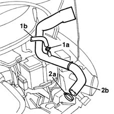

1048A41 sleeve from debimeter to turbocharger - r r
- Path
- Procedures > 10 ENGINE UNIT > 1048 ENGINE AIR SUPPLY CIRCUIT > 1048A VACUUM AIR CIRCUIT > 1048A41 sleeve from debimeter to turbocharger - r r
- Kind
- repair procedure (removal / refitting; the operation number is the code)
- Applies to
- engines: 1.9 JTD 8V; all production periods
- Interactive page
- https://sloeber94.github.io/elrnDB-fMltpl/en/#/2891389
Applies to: engines: 1.9 JTD 8V; all production periods
 Removing
Removing
 Refitting
RefittingOpen the bonnet lid.
1048A10 AIR CLEANER FILTERING ELEMENT - REPLACE
1. Open clamps (1a) and disconnect vapour separator pipe (1b).
2. Open clamp (2a) on the turbocharger and remove sleeve (2b) from the engine bay.

Applies to: engines: 1.9 JTD 8V; all production periods
Refitting
RemovingPosition the sleeve in the engine bay. engine.
Connect the sleeve to the fitting on the turbocharger.
Connect the vapour separator air line.
Connect the clamp.
1048A10 AIR CLEANER FILTERING ELEMENT - REPLACE
Close the bonnet lid.